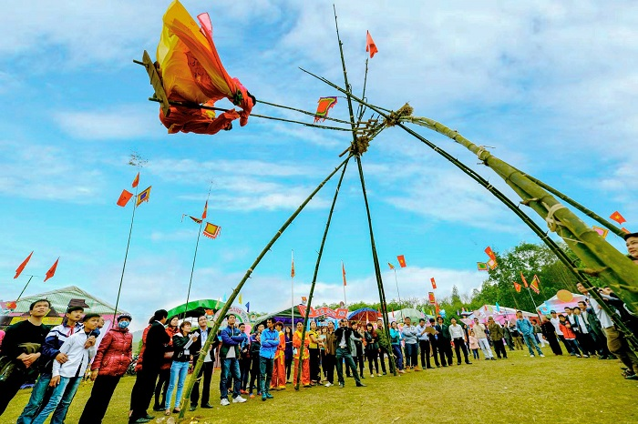

Là nhóm trò chơi mang tính chất thiên về tình yêu đôi lứa. Dưới chế độ
phong kiến xưa, nam nữ thường bị cấm cản bởi những lễ giáo phong kiến, họ
không được tự do tìm hiểu và chọn lựa người mình yêu, nhưng trò chơi luyến
ái đã đáp ứng được nhu cầu này của các nam thanh nữ tú, họ có dịp được
thân mật nhau mà không bị lễ giáo, lệ làng bác bỏ, và sau nhiều trò chơi
như thế có người đã thành vợ thành chồng. Trò chơi luyến ái còn mang một
chút tín ngưỡng dân gian, gửi gắm trong đó ước nguyện của nhân dân về sự
bình an, mùa màng tươi tốt. Cũng bởi tính thiêng đó mà trò chơi luyến ái
thường diễn ra trong không gian lễ hội, ít khi diễn ra ở những không gian
thường.

Trò chơi phong tục gồm các trò chơi nghiêng tính thiêng liêng, mang dáng
dấp của những nghi lễ, phong tục xa xưa của người Việt. Nhóm trò chơi dân
gian này chứa đựng những tư tưởng, tình cảm của dân tộc, lưu giữ đậm nét
tín ngưỡng, phong tục dân tộc, từ tín ngưỡng vạn vật hữu linh cho đến quan
niệm về thờ cúng thần linh, trời đất. Bởi tính chất linh thiêng nên trò
chơi phong tục cũng được diễn ra nhiều trong không gian lễ hội.

Nhóm trò chơi chiến trận có hai loại thành phần tham gia, một là giữa cá
nhân với nhau, hai là giữa tập thể với tập thể, tất cả hai thành phần tham
gia này đều là những con người có khiếu, có tài, đại diện cho một thôn,
làng hoặc bảng. Đây là những cuộc thi đấu đầy tinh thần thượng võ dân tộc
Đây là nhóm trò chơi có số người cổ vũ rất nhiều, nó đem lại nhiều niềm
vui cho cả những người ngoài cuộc chơi. Nó thể hiện rõ sức mạnh, sự tinh
nhuệ, năng động, sung sức của lớp lớp thế hệ trẻ dân tộc, sức mạnh được
phô bày ra giữa thiên nhiên, trời đất, nó thể hiện quan niệm sống hết
mình, cố gắng vượt lên những bất lợi của thiên nhiên, vượt qua khó khăn
của người Việt.

Trò chơi trí tuệ là loại trò chơi chiếm một phần khá lớn trong tổng thể
các trò chơi dân gian. Nếu như trò chơi trận chiến thể hiện sự linh hoạt,
sức mạnh, khéo léo cũng như dẻo dai thì với trò chơi trí tuệ, người chơi
lại thể hiện khả năng quan sát, tư duy, trí tuệ của người chơi.
Nhóm trò chơi chiến trận có hai loại thành phần tham gia, một là giữa cá
nhân với nhau, hai là giữa tập thể với tập thể, tất cả hai thành phần tham
gia này đều là những con người có khiếu, có tài, đại diện cho một thôn,
làng hoặc bảng. Đây là những cuộc thi đấu đầy tinh thần thượng võ dân tộc
Đây là nhóm trò chơi có số người cổ vũ rất nhiều, nó đem lại nhiều niềm
vui cho cả những người ngoài cuộc chơi. Nó thể hiện rõ sức mạnh, sự tinh
nhuệ, năng động, sung sức của lớp lớp thế hệ trẻ dân tộc, sức mạnh được
phô bày ra giữa thiên nhiên, trời đất, nó thể hiện quan niệm sống hết
mình, cố gắng vượt lên những bất lợi của thiên nhiên, vượt qua khó khăn
của người Việt.